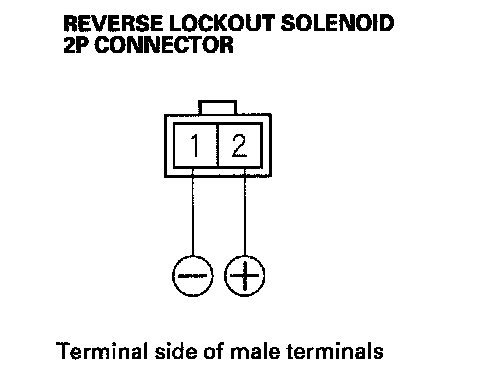

Reverse Lockout Solenoid Test
Reverse Lockout Solenoid Test1. Remove the reverse lockout solenoid.
2. Connect battery positive terminal to the reverse lockout solenoid 2P connector No. 2 terminal, and connect the battery negative terminal to the No. 1 terminal.

3. Make sure the reverse lockout solenoid works. If the reverse lockout solenoid does not work, replace it.